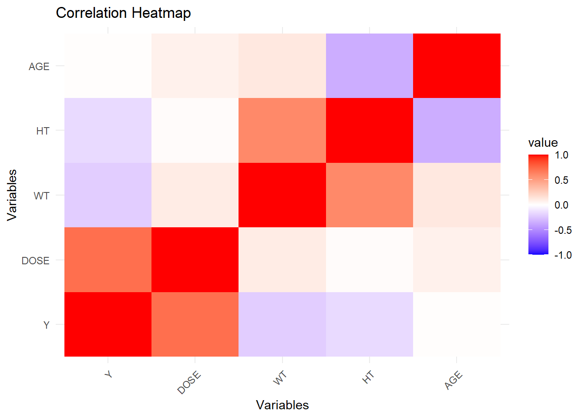

Y DOSE WT HT AGE
Y 1.00000000 0.71808396 -0.2128719 -0.15832972 0.01256372
DOSE 0.71808396 1.00000000 0.1012319 0.01877994 0.07201600
WT -0.21287194 0.10123185 1.0000000 0.59975050 0.11967399
HT -0.15832972 0.01877994 0.5997505 1.00000000 -0.35185806
AGE 0.01256372 0.07201600 0.1196740 -0.35185806 1.00000000
# Melt the correlation matrix for ggplotcor_matrix_melted <-melt(cor_matrix)# Plot the heatmapggplot(cor_matrix_melted, aes(Var1, Var2, fill = value)) +geom_tile() +scale_fill_gradient2(low ="blue", high ="red", mid ="white", midpoint =0, limit =c(-1, 1)) +theme_minimal() +theme(axis.text.x =element_text(angle =45, hjust =1)) +labs(title ="Correlation Heatmap", x ="Variables", y ="Variables")

This section entails the creation of 3 models using the TidyModels workflow. Model 1 is a linear regression model, model 2 is made with LASSO, and the last model utilizes random forest.
# Calculate and create BMI columndata$BMI <- data$WT / data$HT^2recipe <-recipe(Y ~ DOSE + AGE + SEX + RACE + WT + HT + BMI, data = data) %>%step_dummy(all_nominal_predictors())# set method for modelinglm_spec <-linear_reg() %>%set_engine("lm")# Insert recipelm_wf <-workflow() %>%add_recipe(recipe)lm_fit <- lm_wf %>%add_model(lm_spec) %>%fit(data = data)lm_fit %>%extract_fit_parsnip() %>%tidy()
# Set method for random forestforest_spec <-rand_forest(mode ="regression") %>%set_engine("ranger", seed = rngseed)# Insert recipeforest_wf <-workflow() %>%add_recipe(recipe)# Create model with all predictors and random forestforest_fit <- forest_wf %>%add_model(forest_spec) %>%fit(data = data)# Make predictions and calculate RMSE with models# Linear Modellm_preds <-predict(lm_fit, new_data = data)lm_preds <-tibble(truth = data$Y, predicted = lm_preds$.pred)lm_rmse <- lm_preds %>%metrics(truth = truth, estimate = predicted)print(lm_rmse)
# A tibble: 3 × 3
.metric .estimator .estimate
<chr> <chr> <dbl>
1 rmse standard 572.
2 rsq standard 0.644
3 mae standard 443.
# A tibble: 50 × 7
penalty .metric .estimator mean n std_err .config
<dbl> <chr> <chr> <dbl> <int> <dbl> <chr>
1 0.00001 <NA> <NA> NA NA NA Preprocessor1_Model01
2 0.0000139 <NA> <NA> NA NA NA Preprocessor1_Model02
3 0.0000193 <NA> <NA> NA NA NA Preprocessor1_Model03
4 0.0000268 <NA> <NA> NA NA NA Preprocessor1_Model04
5 0.0000373 <NA> <NA> NA NA NA Preprocessor1_Model05
6 0.0000518 <NA> <NA> NA NA NA Preprocessor1_Model06
7 0.0000720 <NA> <NA> NA NA NA Preprocessor1_Model07
8 0.0001 <NA> <NA> NA NA NA Preprocessor1_Model08
9 0.000139 <NA> <NA> NA NA NA Preprocessor1_Model09
10 0.000193 <NA> <NA> NA NA NA Preprocessor1_Model10
# ℹ 40 more rows
# getting error that autoplot(lasso_tune_res) does not work because of apparent()
# Tuning forestforest_spec <-rand_forest(mode ="regression", trees =300, mtry =tune(), min_n =tune()) %>%set_engine("ranger")# Create grid with set parametersforest_grid <-grid_regular(mtry(range =c(1, 7)), min_n(range =c(1, 21)), levels =7)# Resample using apparentforest_resample <-apparent(data)# Tune forestset.seed(1234)forest_tune_res <-tune_grid( forest_wf %>%add_model(forest_spec),resamples = forest_resample, grid = forest_grid, metrics =metric_set(rmse, rsq))# getting error that autoplot(forest_tune_res) does not work because of apparent()
The next two coding chunks entail basic tuning of models withthe use of cross-validation.
# Set seedset.seed(1234)# 5 fold crossvalidation repeated 5 timescv_folds <-vfold_cv(data, v =5, repeats =5)# Tune the gridlasso_tune_res <-tune_grid( lasso_wf %>%add_model(tune_spec),resamples = cv_folds,grid = lasso_grid,metrics =metric_set(rmse, rsq))# Plot resultsautoplot(lasso_tune_res)